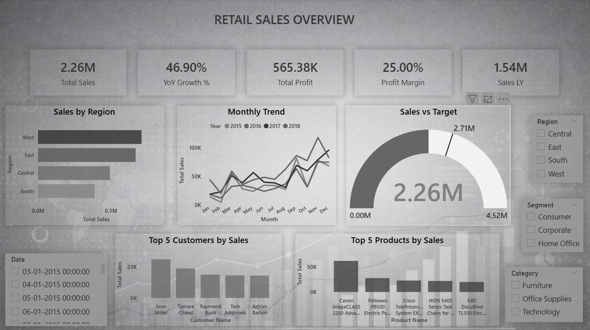
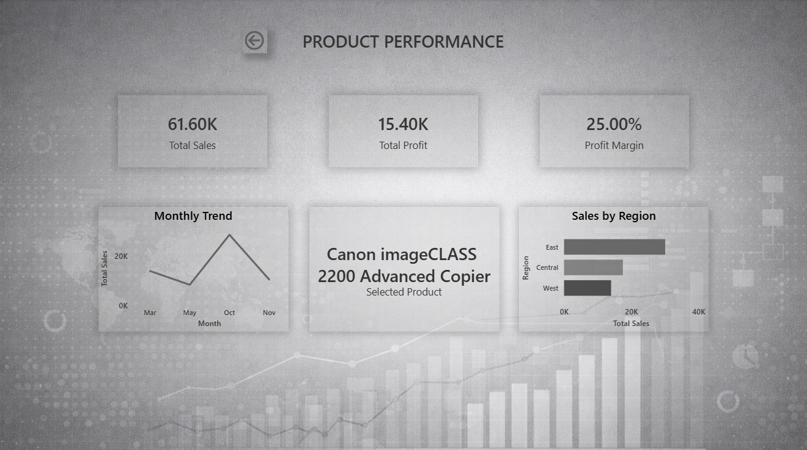
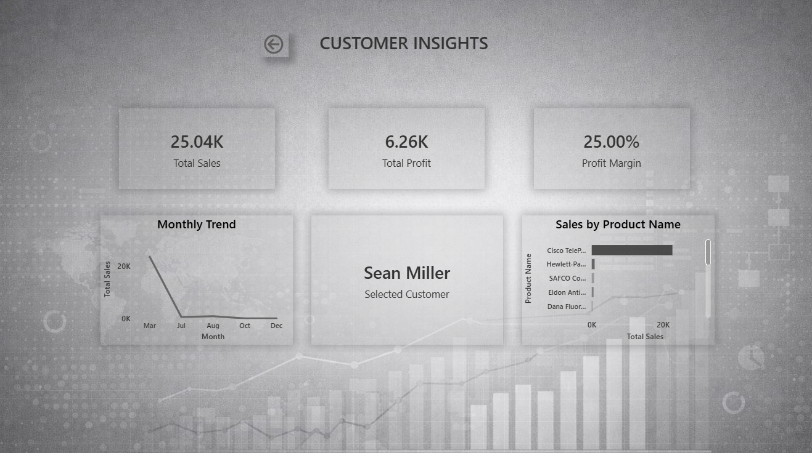

An interactive Power BI dashboard developed to analyse retail sales performance, customer behaviour, product performance, profitability, and regional sales trends.
← Back to PortfolioThe Retail Sales Analytics Dashboard provides business leaders with a comprehensive view of sales performance, product trends, customer insights, and profitability. It enables data-driven decisions through interactive reports and KPI tracking.
Retail businesses generate large volumes of transactional data. Without a centralized reporting solution, analysing sales, profit, customers, and products becomes inefficient. This dashboard consolidates key business metrics into one interactive view to support faster and more informed decision-making.
Power Query, DAX, Data Cleaning, Data Modelling, Dashboard Development



Track overall sales performance across all regions.
Monitor business profitability and financial performance.
Measure overall profit efficiency.
Analyse year-over-year sales performance.
Identify the best-performing products based on sales.
Analyse high-value customer segments.
Compare sales performance across different regions.
Track monthly sales and profit trends.
This dashboard provides business users with a comprehensive overview of retail sales performance, customer insights, and product profitability. By transforming raw retail data into interactive visualisations and actionable KPIs, it supports informed decision-making, improves operational efficiency, and drives business growth.